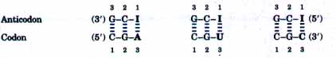
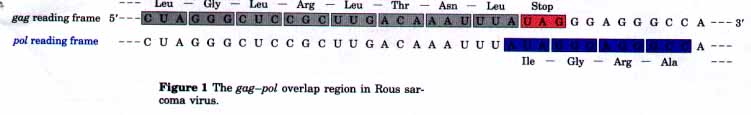
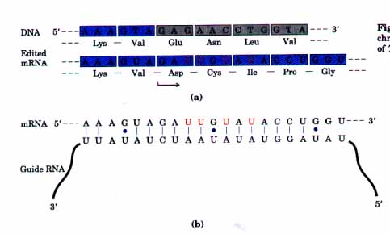
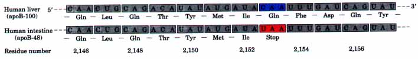
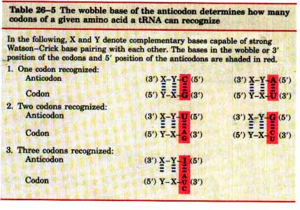

Transfer RNAs recognize codons by base pairing between the mRNA codon and a three-base sequence on the tRNA called the anticodon. The two RNAs are paired antiparallel, the first base of the codon (always reading in the 5'→3' direction) pairing with the third base of the anticodon (Fig. 26-8).
One might expect the anticodon triplet of a given tRNA to recognize only one codon triplet through Watson-Crick base pairing, so that there would be a different tRNA for each codon of an amino acid. However, the number of different tRNAs for each amino acid is not the same as the number of its codons. Moreover, some of the tRNAs contain the nucleotide inosinate (designated I), which contains the uncommon base hypoxanthine (see Fig. 12-5b). Molecular models show that inosinate can form hydrogen bonds with three different nucleotides, U, C, and A, but these pairings are rather weak compared with the strong hydrogen bonds between the Watson-Crick base pairs G≡C and A=U. In yeast, for example, one tRNAArg has the anticodon (5')ICG, which can recognize three different arginine codons, (5')CGA, (5')CGU, and (5')CGC. The first two bases of these codons are identical (CG) and form strong Watson-Crick base pairs (blue) with the corresponding bases of the anticodon:

B O X 26-1Translational Frameshifting and RNA Editing: mRNAs That Change Horses in MidstreamProteins are synthesized according to a pattern of contiguous triplet codons. Once the reading frame is set, codons are translated in order, without overlap or punctuation, until a termination codon is encountered. Usually, the other two possible reading frames within a gene contain no useful genetic information. However, a few genes are structured so that ribosomes "hiccup" at a certain point in the translation of the mRNA, leading to a change in the reading frame from that point on. In some cases this appears to be a mechanism used to produce two or more related proteins from a single transcript or to regulate the synthesis of a protein. The best-documented example occurs in the translation of the mRNA for the gag and pol genes of the Rous sarcoma virus (see Fig. 25-31). The two genes overlap, with pol encoded by the reading frame in which each codon is offset to the left by one base pair (-1 reading frame) relative to gag (Fig. 1). The product of the pol gene (reverse transcriptase; p. 882) is translated initially as a larger gag pol fusion protein using the same mRNA used for the gag protein alone. This fusion protein is later trimmed to the mature reverse transcriptase by proteolytic digestion. The large fusion protein is produced by a translational frameshift that occurs in the overlap region and allows the ribosome to bypass the UAG termination codon at the end of the gag gene (shown in red in Fig. 1). This frameshift occurs in about 5% of the translation events, so that the gag pol fusion protein, and ultimately reverse transcriptase, is synthesized at the appropriate level for efficient replication of the viral genome-about 20-fold less than the gag protein. A similar mechanism is used to produce both the τ and γ subunits of E. coli DNA polymerase III from dnaX gene transcripts (see Table 24-2). An example of the use of this mechanism for regulation occurs in the gene for E. coli release factor 2 (RF2), a protein required for termination of protein synthesis at the termination codons UAA and UGA (described later in this chapter). The 26th codon of the gene for RF2 is UGA, which would normally halt protein synthesis. The remainder of the gene is in the +1 reading frame (off set one base pair to the right) relative to this UGA codon. Low levels of RF2 lead to a translational pause at this codon, because UGA is not recognized as a termination codon unless RFz binds to it. The absence of RF2 prevents the termination of protein synthesis at this UGA and allows time for a frameshift so that UGA plus the C that follows it (UGAC) is read as GAC = Asp. Translation then proceeds in the new reading frame to complete synthesis of RF2. In this way, RF2 regulates its own synthesis in a feedback loop. An especially unusual frameshifting mechanism occurs through the editing of mRNAs prior to translation. The genes in mitochondrial DNA that encode the cytochrome oxidase subunit II in some protists do not have open reading frames that correspond precisely to the protein product. Instead, the codons specifying the amino terminus of the protein are in a different reading frame from the codons specifying the carboxyl terminus. The problem is corrected not on the ribosome, but by a posttranscriptional editing process in which four uridines are added to create three new codons and shift the reading frame so that the entire gene can be translated directly, as shown in Figure 2a; the added uridine residues are shown in red. Only a small part of the gene (the region affected by editing) is shown. Neither the function nor mechanism of this editing process is understood. A special class of RNA molecules encoded by these mitochondria have been detected that have sequences complementary to the final, edited mRNAs. These appear to act as templates for the editing process and are referred to as guide RNAs (Fig. 2b). Note that the base pairing involves a number of G=U base pairs (symbolized by blue dots), which are common in RNA molecules.  Figure 1 The gag pol overlap region in Rous sarcoma virus.  Figure 2 RNA editing of the transcript of the cytochrome oxidase subunit II gene from mitochondria of Trypanosoma brucei. A distinct form of RNA editing occurs in the gene for the apolipoprotein B component of lowdensity lipoprotein in vertebrates. One form of apo lipoprotein B, called apoB-100 (Mr 513,000), is synthesized in the liver. A second form, apoB-48 (M,. 250,000), is synthesized in the intestine. Both are synthesized from an mRNA produced from the gene for apoB-100. A cytosine deaminase enzyme found only in the intestine binds to the mRNA at codon 2,153 (CAA = Gln) and converts the C to a U to introduce the termination codon UAA at this position. The apoB-48 produced in the intestine from the modified mRNA is simply an abbreviated form (corresponding to the amino-terminal half) of apoB-100 (Fig. 3). This reaction permits the synthesis of two different proteins from one gene in a tissue-specific manner.  Figure 3 RNA editing of the transcript of the gene for the apolipoprotein B-100 component of lowdensity lipoprotein. |
The third bases of the arginine codons (A, U, and C) form rather weak hydrogen bonds with the I residue at the first position of the anticodon. Examination of these and other codon-anticodon pairings led Crick to conclude that the third base of most codons pairs rather loosely with the corresponding base of its anticodons; to use his picturesque word, the third bases of such codons "wobble." Crick proposed a set of four relationships called the wobble hypothesis:
1. The first two bases of a codon in mRNA always form strong Watson-Crick base pairs with the corresponding bases of the anti- codon in tRNA and confer most of the coding specificity.
2. The first base of some anticodons (reading in the 5'→3' direction; remember that this is paired with the third base of the codon) determines the number of codons read by a given tRNA. When the first base of the anticodon is C or A, binding is specific and only one codon is read by that tRNA. However, when the first base is U or G, binding is less specific and two different codons may be read. When inosinate (I) is the first, or wobble, nucleotide of an anticodon, three different codons can be read by that tRNA. This is the maxi- mum number of codons that can be recognized by a tRNA. These relationships are summarized in Table 26-5.
3. When an amino acid is specified by several different codons, those codons that differ in either of the first two bases require different tRNAs.
4. A minimum of 32 tRNAs are required to translate all 61 codons.

What can the reason be for this unexpected complexity of codonanticodon interactions? In brief, the first two bases of a codon confer most of the codon-anticodon specificity. The wobble (or third) base of the codon contributes to specificity, but because it pairs only loosely with its corresponding base in the anticodon, it permits rapid dissociation of the tRNA from its codon during protein synthesis. If all three bases of mRNA codons engaged in strong Watson-Crick pairing with the three bases of the tRNA anticodons, tRNAs would dissociate too slowly and severely limit the rate of protein synthesis. Codonanticodon interactions optimize both accuracy and speed.